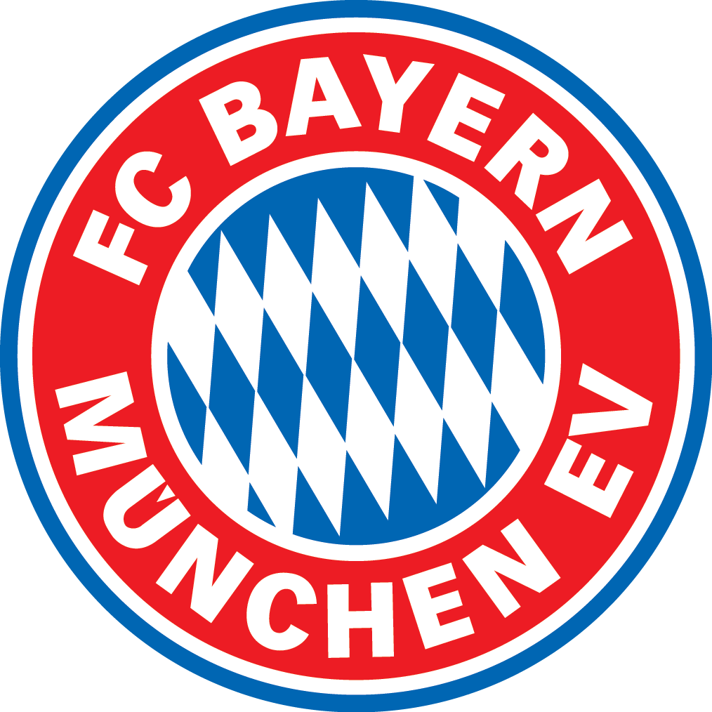

Klub Sepak Bola West Ham United, umumnya dikenal sebagai West Ham, adalah klub sepak bola profesional yang berbasis di London,
Inggris. Tim ini didirikan pada tahun 1895 sebagai Thames Ironworks FC, dan kemudian berganti nama menjadi West Ham United
pada tahun 1900. Klub ini memiliki sejarah yang kaya dan telah menjadi rumah bagi beberapa pemain terhebat dalam sejarah
sepak bola Inggris.

Bayern memiliki sejarah panjang dari awal berdiri hingga mampu sukses seperti sekarang.
Klub berjuluk FC Hollywood ini pertama berdiri mulai tahun 1900 lalu. Berikut akan kami ulas mengenai sejarah
Bayern Munchen dari awal hingga di era modern kini. Bayern Munchen pertama dibentuk pada tahun 1900,
tepatnya pada tanggal 27 Februari 1900.
Awal mula terbentuknya Manchester City, ditandai dengan diangkatnya Arthur Connell sebagai kepala Gereja St Mark di West Gorton,
sebuah distrik bagian timut Kota Manchester. Kejahatan di Kota Manchester saat itu sangat tinggi. Putri Arthur Connell, Anna
Connell ingin membentuk asosiasi olah raga pemuda untuk menurunkan tingkat kejahatan di Kota Manchester. Maka dari itu, lahirlah sebuah
klub kriket di bawah Gereja St Mark pada tahun 1868. Selanjutnya, klub kriket tersebut mengalami perubahan menjadi sebuah tim
sepak bola bernama St.Marks (West Gordon) pada tahun 1880. Kemunculan tim sepak bola tersebut tidak lepas dari
kepopuleran dunia bal-balan yang mulai naik.
Awal mula sejarah Manchester United adalah saat pertama dibentuk di tahun 1878. Saat itu nama klub ini adalah Newton
Heath LYR dan baru berganti nama menjadi Manchester United sejak tahun 1902. Sejak tahun 1910, klub ini bermarkas di Stadion
Old Trafford. Klub ini menjadi salah satu klub papan atas dalam sejarah Liga Inggris.